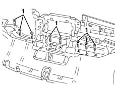
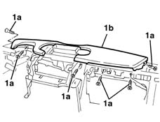

7040A25 central facia trim - r r
- Path
- Procedures > 70 FITTINGS > 7040 BODYSHELL INTERIOR TRIMS AND FITTINGS > 7040A passenger compartment trim > 7040A25 central facia trim - r r
- Kind
- repair procedure (removal / refitting; the operation number is the code)
- Applies to
- all engines; all production periods
- Interactive page
- https://sloeber94.github.io/elrnDB-lYpsln/en/#/2429575
Applies to: all engines; all production periods
 Removing
Removing
 Refitting
Refitting7040A26 steering column trim - r+r
5040C12 air conditioner housing - r r with facia disconnected
7040A74 TRIM under control panel - R.R.
7040A11 control panel lid - r + r
5560B10 analogue control panel - r+r
7040L28 tunnel switch panel - r r
7040L22 REAR TRIM on TUNNEL -R.R.
7040A18 glove compartment on facia - arrange
7040A30 Left instrument panel lower TRIM - R.R.
2125A30 lever/knob cover - r + r
7040A28 TRIM on gearbox control panel - R.R.
5505A25 SWITCH UNIT for OPTIONAL EQUIPMENT - R.R.
5040D18 air conditioner control unit - r r
5580C26 LOCK BARREL KEY/SWITCH for deactivating passenger 'AIR BAG - R.R.
7040A10 instrument facia trim - r+r
5010C31 centre air outlet on facia one lh or rh r r (right and left)
5010C22 Dynamic side air VENT in dashboard (one) left or right - R.R. (right and left)
1. Undo the trim fixing bolts from the inside.

Applies to: all engines; all production periods
1. Undo the trim fixing bolts (1a) from the outside, then remove the trim (1b).

Applies to: all engines; all production periods
Refitting
RemovingCheck that the centre dashboard trim is not damaged.
Position the trim and fasten it using the bolts from the inside and the outside.
5010C22 Dynamic side air VENT in dashboard (one) left or right - R.R. (right and left)
5010C31 centre air outlet on facia one lh or rh r r (right and left)
7040A10 instrument facia trim - r+r
5580C26 LOCK BARREL KEY/SWITCH for deactivating passenger 'AIR BAG - R.R.
5040D18 air conditioner control unit - r r
5505A25 SWITCH UNIT for OPTIONAL EQUIPMENT - R.R.
7040A28 TRIM on gearbox control panel - R.R.
2125A30 lever/knob cover - r + r
7040A30 Left instrument panel lower TRIM - R.R.
7040A18 glove compartment on facia - arrange
7040L22 REAR TRIM on TUNNEL -R.R.
7040L28 tunnel switch panel - r r
5560B10 analogue control panel - r+r
7040A11 control panel lid - r + r
7040A74 TRIM under control panel - R.R.
5040C12 air conditioner housing - r r with facia disconnected
Topics linked from this page (19)
- 2125A30 lever/knob cover - r + r
- 5010C22 Dynamic side air VENT in dashboard (one) left or right - R.R.
- 5010C31 centre air outlet on facia one lh or rh r r
- 5040C12 air conditioner housing - r r with facia disconnected
- 5040D18 air conditioner control unit - r r
- 5505A25 SWITCH UNIT for OPTIONAL EQUIPMENT - R.R.
- 5560B10 analogue control panel - r+r
- 5570T80 car radio unit - r+r
- 5580C26 LOCK BARREL KEY/SWITCH for deactivating passenger 'AIR BAG - R.R.
- 7040A10 instrument facia trim - r+r
- 7040A11 control panel lid - r + r
- 7040A18 glove compartment on facia - arrange
- 7040A26 steering column trim - r+r
- 7040A28 TRIM on gearbox control panel - R.R.
- 7040A30 Left instrument panel lower TRIM - R.R.
- 7040A74 TRIM under control panel - R.R.
- 7040L20 tunnel trim - r r
- 7040L22 REAR TRIM on TUNNEL -R.R.
- 7040L28 tunnel switch panel - r r